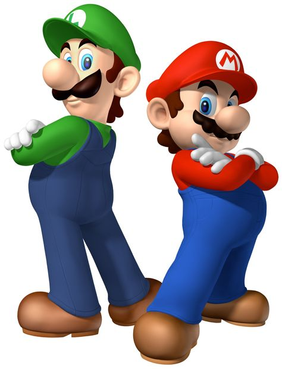

En esta página puedes ir al primer apartado, al
segundo o al tercero
Primer apartado
Mario y Lugi son los protagonistas de una serie de videojuegos de rol desarrollados por AlphaDream y publicados por Nintendo para sus diversas consolas portátiles de videojuegos.
La serie es un spin-off de la serie Super Mario de Nintendo y está protagonizada por los personajes principales Mario y Luigi.
Haz click en la imagen para ver información sobre los personajes.

Segundo apartado
Mario es una saga de videojuegos de plataformas cuyo propietario actual es Nintendo y que actualmente cuenta con un total de 145 juegos para Switch, Android, iPhone, Wii U, Nintendo 3DS, Wii, NDS, GameCube, Game Boy Advance y Nintendo 64.
Este es el link de una página en la que vienen todos los juegos creados y descripción de cada uno de ellos:
Videojuegos e historia de cada uno

Tercer apartado
¿DE QUE TRATA EL JUEGO?
Volver arriba